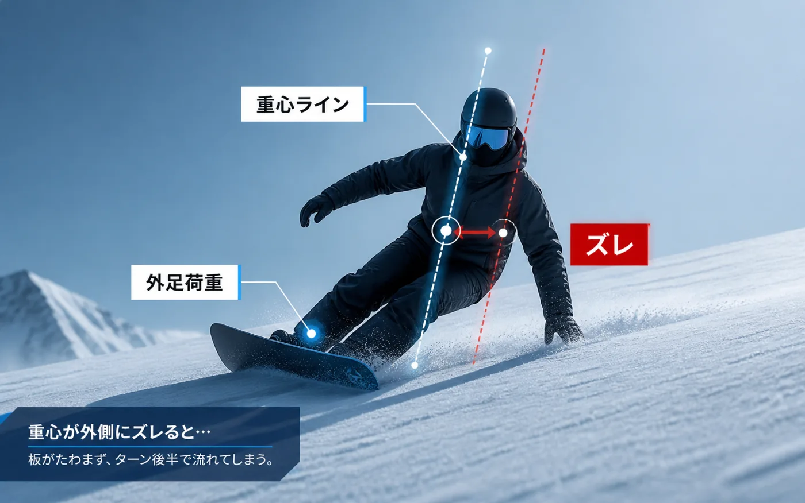
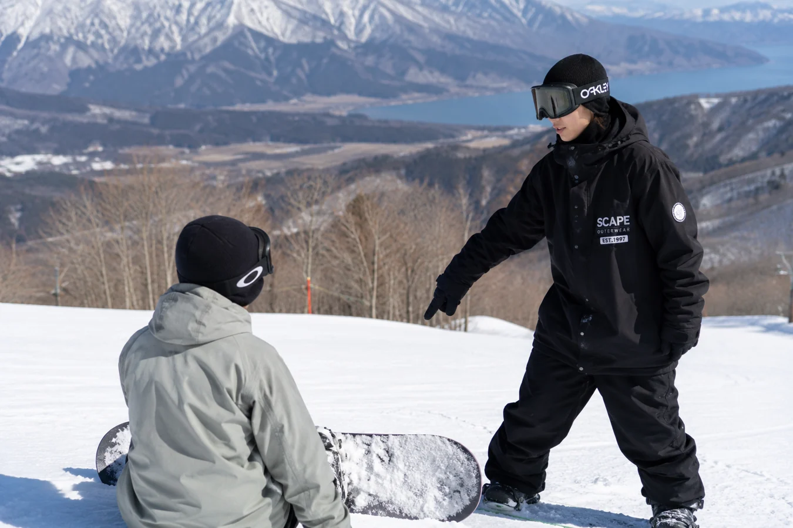

カービングでズレる
エッジに乗れているつもりでも、ターン後半で板が逃げてしまう。
スノーボード専門コーチ / 初心者対応 / 技術指導
初心者からターン上達まで。
雪山で変化を実感するレッスン。
プライベートレッスン、グループレッスン、カービング指導、動画解析に対応。滑走ラインとフォームを整理し、次に直すポイントを明確にします。
Problem
独学では気づきにくい滑りの癖を、言葉と映像で整理します。
エッジに乗れているつもりでも、ターン後半で板が逃げてしまう。
毎回タイミングが変わり、同じラインを再現できない。
切り替えや斜度変化でポジションが崩れ、板を押さえきれない。
動画を見返しても、どこを直すべきか判断できない。
練習量はあるのに、上達の優先順位が曖昧になっている。
Service
スノーボード レッスンを「その場で楽しい」だけで終わらせず、次に何を練習すべきかまで持ち帰れるコーチングにします。一般的なスノーボードスクールでは物足りない方にも、スノーボード 上達の道筋を個別に設計します。
姿勢、目線、荷重、板の動きを確認します。
自分では見えない癖を客観的に残します。
コマ送りで動きの原因を分解します。
専門用語に頼らず、直す順番を明確にします。
改善ポイントを絞って身体に定着させます。
レッスン後も復習できる形で整理します。
Flow
Analysis UI
実際の映像がなくても、確認するポイントは明確です。上体、荷重、エッジング、ターン後半の安定感をフレーム単位で読み解きます。

Why Choose
「なんとなく」を、理解できる言葉に変換します。
結果だけでなく、崩れた理由から整理します。
体格、経験、恐怖心、目標に合わせて調整します。
難しい表現を避け、順番に理解できるよう伝えます。
次回までに何を練習するかが明確に残ります。

Profile
競技歴や肩書きだけに頼らず、目の前の滑りを丁寧に観察し、上達に必要な順番を整理することを大切にしています。スノーボード初心者の不安から、中級者のカービング改善まで、感覚論ではなく再現性のあるコーチングを行います。
匿名運営でも安心して相談できるよう、事前のヒアリング、当日の進行、料金、問い合わせ方法を分かりやすく公開しています。
FAQ
大丈夫です。止まり方やターンの基本から、怖さが出にくい順番で進めます。
レンタル自体は各ゲレンデのサービスをご利用ください。予約前に利用予定のゲレンデを確認します。
初心者、初級者、中級者、カービングを上達させたい方、ターンやフォーム改善をしたい方に対応しています。
必須ではありません。ただし滑走解析や動画解析を行うと、改善点をより正確に共有できます。
GmailまたはGoogleフォームからご連絡ください。日程、場所、レベルを確認します。
Contact
まずはお気軽にご相談ください。現在のレベル、悩み、目標を聞いたうえで、最適なスノーボードコーチングをご提案します。